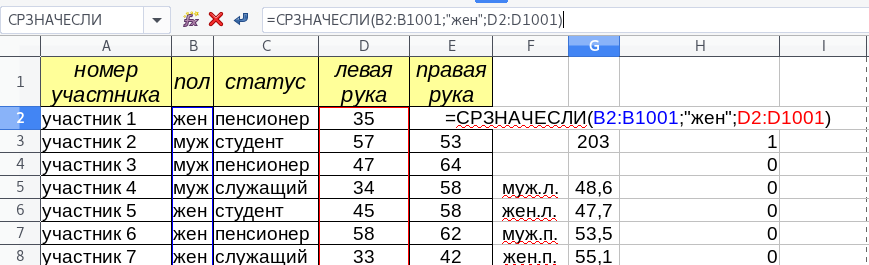
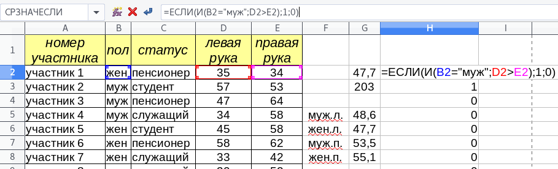
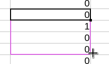
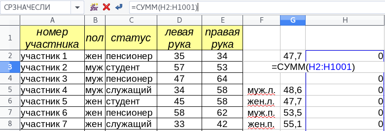
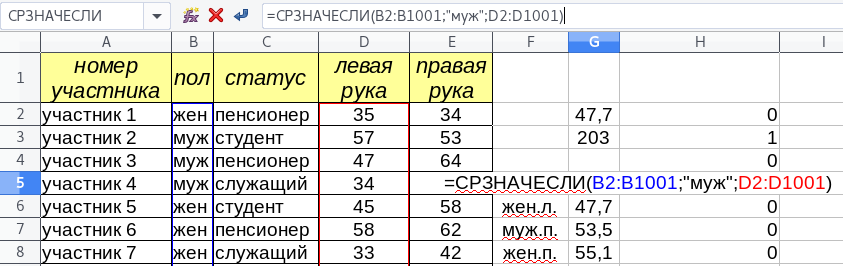
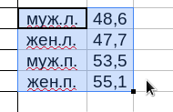
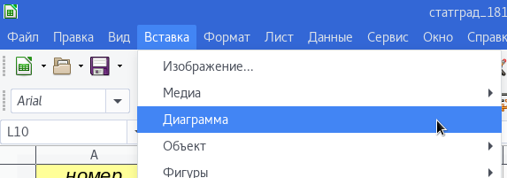
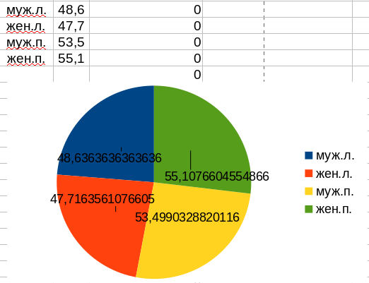

Разбор 14 номера ОГЭ. Скачать таблицу Скачать ответы
- Каков средний показатель для левой руки у женщин? Ответ на этот вопрос с точностью до одного знака после запятой запишите в ячейку G2 таблицы.
- У скольких мужчин показатель для левой руки больше показателя для правой руки? Ответ на этот вопрос запишите в ячейку G3 таблицы.
- Постройте круговую диаграмму, отображающую соотношение среднего показателя для левой руки у женщин, для правой руки у женщин, для левой руки у мужчин и для правой руки у мужчин.
Для ответа на 1 вопрос воспользуемся функцией СРЗНАЧЕСЛИ , где диапазоном будут ячейки столбца B, критерием - "жен", а диапазоном усреднения - ячейки столбца D.

Для ответа на 2 вопрос воспользуемся функцией И для того, чтобы проверить одновременно 2 условия:
- Пол
- Неравенство показателей
После того, как условие сформировано, его можно указать функции ЕСЛИ . Результатом будет 1, если условие верно, и 0 - в противном случае.

Сделав это, растянем за правый нижний угол формулу до конца таблицы.

При помощи функции СУММ найдём сумму единиц и нулей, то есть ответ на 2 номер.

Для 3 номера предварительно необходимо найти при помощи СРЗНАЧЕСЛИ средние показатели для каждого пола и каждого типа рук.

Сделав это и выделив таблицу из полученных показателей и их названий, вставим диаграмму.

В результате получится следующее.
